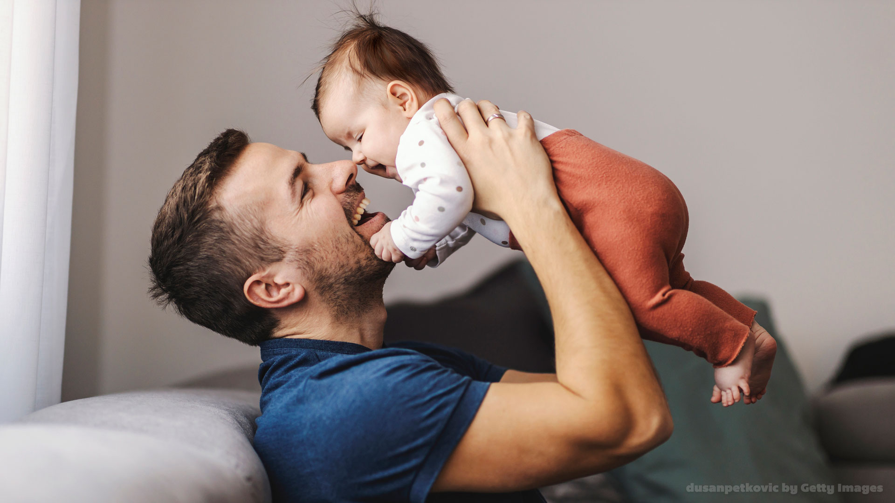

1. Afeto e sensibilidade
Quebre a ideia antiga de que homens não devem demonstrar sentimentos; acolha a criança nos momentos de alegria e de tristeza sem julgamentos.

Quebre a ideia antiga de que homens não devem demonstrar sentimentos; acolha a criança nos momentos de alegria e de tristeza sem julgamentos.
Cuide do planejamento e divida equitativamente as tarefas no puerpério e no dia a dia da casa
Pai não "ajuda", pai cria e participa da rotina completa (dar banho, comida, trocar fraldas, levar à escola e saber detalhes como o nome do pediatra).
As crianças absorvem o que você faz, desde como você trata a mãe ou parceira até como você lida com o estresse, erros e frustrações.
Ofereça segurança com regras consistentes, carinho e paciência, priorizando o diálogo em vez de gritos ou violência.